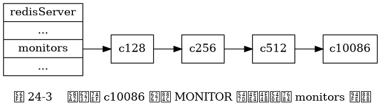
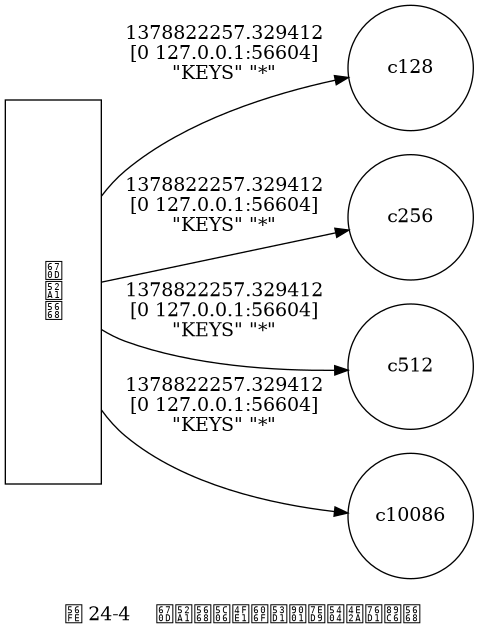

Navigation
index
previous
|
《Redis 设计与实现》图片集
»
第 24 章： 监视器
第 24 章： 监视器
¶


Previous topic
第 23 章： 慢查询日志
This Page
Show Source
Quick search
Navigation
index
previous
|
《Redis 设计与实现》图片集
»
第 24 章： 监视器
![digraph {
label = "\n 图 24-1 命令的接收和信息的发送";
rankdir = LR;
server [label = "服\n务\n器", shape = box, height = 3.0, width = 1.0];
node [shape = circle, width = 1.3];
client [label = "客户端"];
m1 [label = "监视器 1"];
m2 [label = "监视器 2"];
m3 [label = "监视器 3"];
client -> server [label = "发送命令请求"];
edge [label = "发送命令信息"];
server -> m1;
server -> m2;
server -> m3;
}](_images/graphviz-30e19d967667d39cf4f3d87b782156a9cf1a6d38.png)